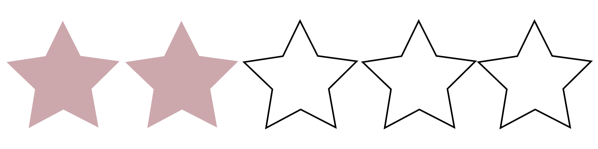
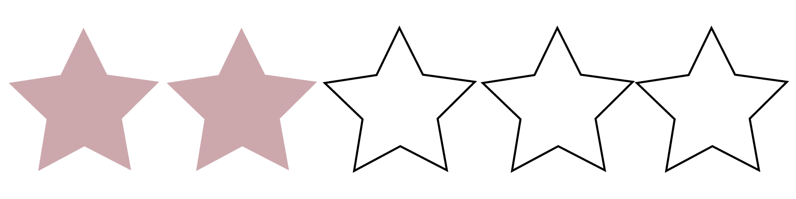

Environmental Impact

Social Impact
Quality of Clothing
If you’ve been following recent news about the fast fashion retailer Zara, you’re aware that the brand has recently been in the spotlight after shoppers in an Istanbul store found little tags attached to clothes that read like desperate SOS notes. “I made this item you are going to buy, but I didn’t get paid for it,” the tags read.
It turns out, those messages were left by workers at an outsourced factory who lost their jobs when the factory abruptly closed more than a year ago. Zara has been slow to respond to their demands for payment, saying only that it has fulfilled its legal obligations with the factory itself. Now Zara’s parent company, Inditex, is facing a growing backlash from consumers who want to know why it’s not dealing more urgently with the workers’ plight. And if it doesn’t take action, the fast-fashion retailer—which is typically well liked by consumers—may risk expending some of its brand equity.
Zara’s animal welfare policy includes a strict ban on fur, angora and on stocking products tested on animals. They also claim to source wool exclusively from non-mulesed sheep. Unfortunately, Zara does use leather and down without stating their sources.
Environmental Impact
Social Impact
Quality of Clothing
As one of the largest fashion retailers in the world, Zara has an opportunity to lead the way into a sustainable future. Zara has set some good policies for supply chain management, such as their Closing the Loop program. However, their business model is based on an unsustainably high turnover rate. Zara pride themselves on giving consumers the ‘latest fashion trends’ every 13 days! The promotion of such rapid consumption is inherently harmful to both people and planet. We believe that, as a global leader in retail, Zara needs to be setting the standard for sustainability. With many of their sustainability targets set for 2020, it will be interesting to see how Zara will rate over the next 2-3 years.
That being said, their shoddy ethics should not be ignored, and if it up to you, we recommend that you boycott it for the time being.